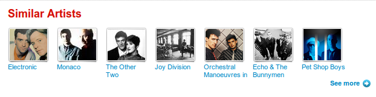

Linked Data in-use
What Linked Data can bring to your app
The Musicbore
So what's possible?

Exploits such cross-domain links to create playlists
Exploits Linked Data to generate ramblings about each artist
Watch the screencast (warning: lots of IRC geekery)
BBC programmes recommendations (1)
Tracklists are programmes-to-artists links
Exploiting those links to generate recommendations
BBC programmes recommendations (2)

BBC programmes recommendations (3)

Generating explanations alongside recommendations
Related artists on BBC Music (1)
owl:sameAs links from BBC Music to DBpedia
For New Order:
<http://www.bbc.co.uk/music/artists/
f1106b17-dcbb-45f6-b938-199ccfab50cc#artist>
owl:sameAs
<http://dbpedia.org/resource/New_Order> .
Which means we're hooked to the rest of the Linked Data cloud...
Related artists on BBC Music (2)
Related artists on BBC Music (3)
Related artists on BBC Music (4)
New Order and The Other Two were both signed on Factory Records. Factory Records was a Manchester based British independent record label, started in 1978 by Tony Wilson and Alan Erasmus, which featured several prominent musical acts on its roster such as Joy Division, New Order, A Certain Ratio, The Durutti Column, Happy Mondays, and (briefly) James and Orchestral Manoeuvres in the Dark. Like the label 4AD Records, Factory Records used a creative team (most notably record producer Martin Hannett and graphic designer Peter Saville) which gave the label, and the artists recording for it, a particular sound and image. The label employed a unique cataloguing system that gave a number not just to its musical releases, but to artwork and other objects.
compared to:

Related artists for New Order on last.fm
Similar artists for New Order on Last.fm
When recommending artists, context is key...
Let's do it yourself...
A stripped down version of what's generating those related artists is available in examples/scripts/artist_connections
We define SPARQL queries for "relatedness rules", e.g. "Two artists born in Detroit in the 60s are related" and a template for generating the associated explanation
For a couple of seed artists, we go through these rules and get a recommendation at random
Generating related artists
$ ruby artist_connections.rb
-------------------------------------------
A random recommendation for Aretha Franklin
{"explanation"=>"Aretha Franklin and Cullen Miller are both based in Detroit",
"recommendation"=>"http://dbpedia.org/resource/Cullen_Miller"}
-------------------------------------------
A random recommendation for Joy Division
{"explanation"=>
"Joy Division and Dave Rowbotham were both signed on Factory Records.",
"recommendation"=>
"http://dbpedia.org/resource/Dave_Rowbotham"}
-------------------------------------------
A random recommendation for Minor Threat
{"explanation"=>
"Minor Threat and Autoclave were both signed on Dischord Records.",
"recommendation"=>"http://dbpedia.org/resource/Autoclave_%28band%29"}
Artists based in Berlin...
$ irb
> require 'rubygems'; require 'rqommend'
> DEFAULT_ENDPOINT = 'http://dbpedia.org/sparql'; DEFAULT_OPTIONS = nil
> Rqommend::Can.new "
PREFIX dbo: <http://dbpedia.org/ontology/>
PREFIX dbp: <http://dbpedia.org/property/>
SELECT *
WHERE {
@INPUT dbp:name ?input_name ;
dbo:homeTown <http://dbpedia.org/resource/Berlin> .
?OUTPUT dbp:name ?output_name ;
dbo:homeTown <http://dbpedia.org/resource/Berlin> ;
a dbo:MusicalArtist .
FILTER (@INPUT != ?OUTPUT )
}",
'<%= result["input_name"] %> and <%= result["output_name"] %> are both based in Berlin'
> resource = Rqommend::Resource.new 'http://dbpedia.org/resource/Atari_Teenage_Riot'
> resource.recommendations
Personal Collection Management
Items in your collection can be linked to the corresponding Musicbrainz URIs
These can be found automatically using GNAT
Then, you can aggregate RDF data about your collection
Local collection → Musicbrainz → DBpedia → Geonames → etc.
It enables your media player (e.g. Songbird) to browse your collection in new and interesting ways
Semantic Desktop
If you're interested in this sort of applications...
Semantic Desktop research, and in particular Nepomuk generalise this approach to all desktop data